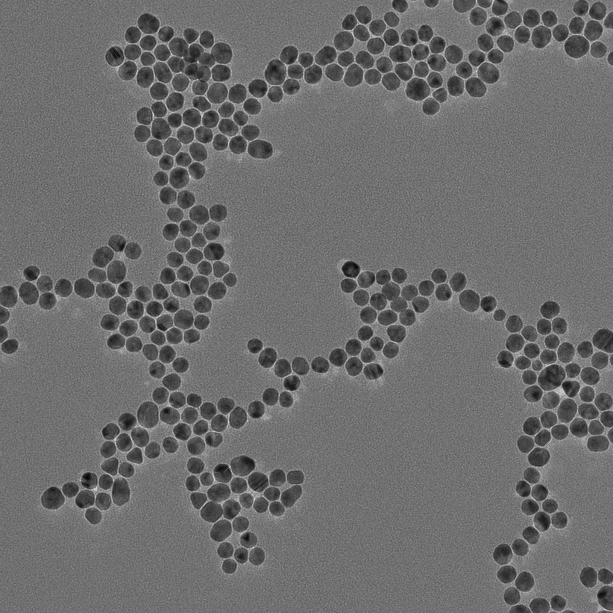
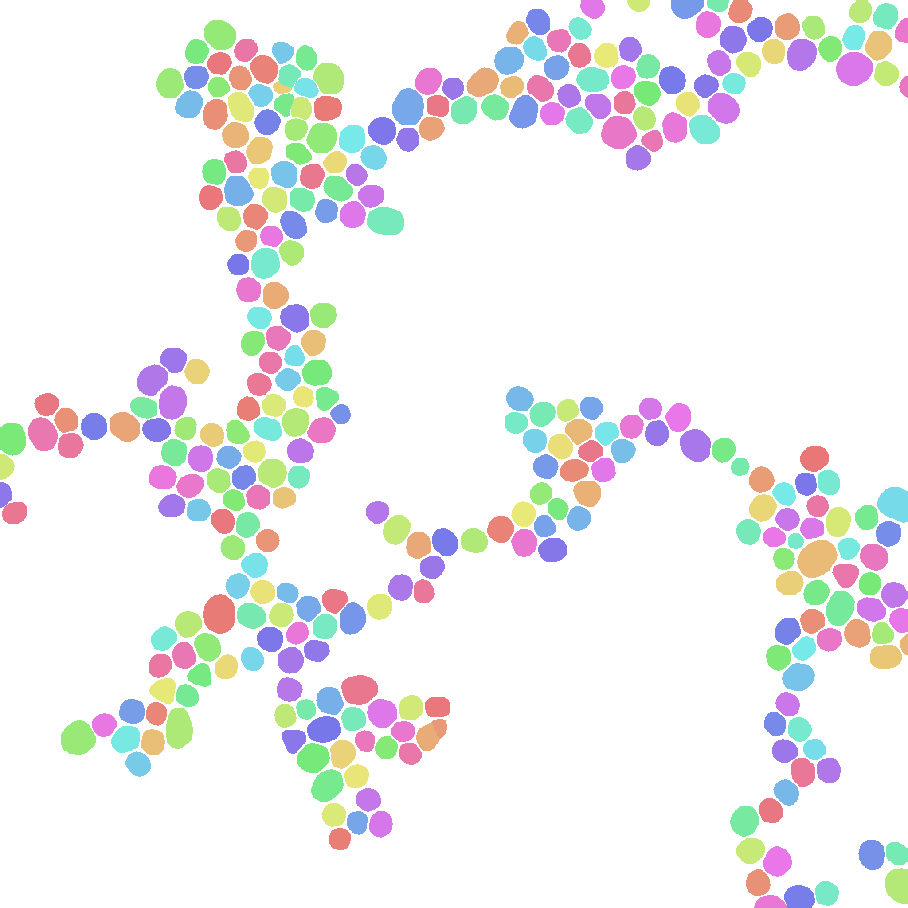

IMAGE ANALYSIS / TEM
From micrograph
to measurements.
TemSeg is a desktop tool for segmenting and measuring particles in transmission electron micrographs. This page shows one actual export. Select a particle in the mask to inspect its measurements.
FIG. 01
One image. 335 measured particles.
DRAG THE DIVIDER TO COMPARE
